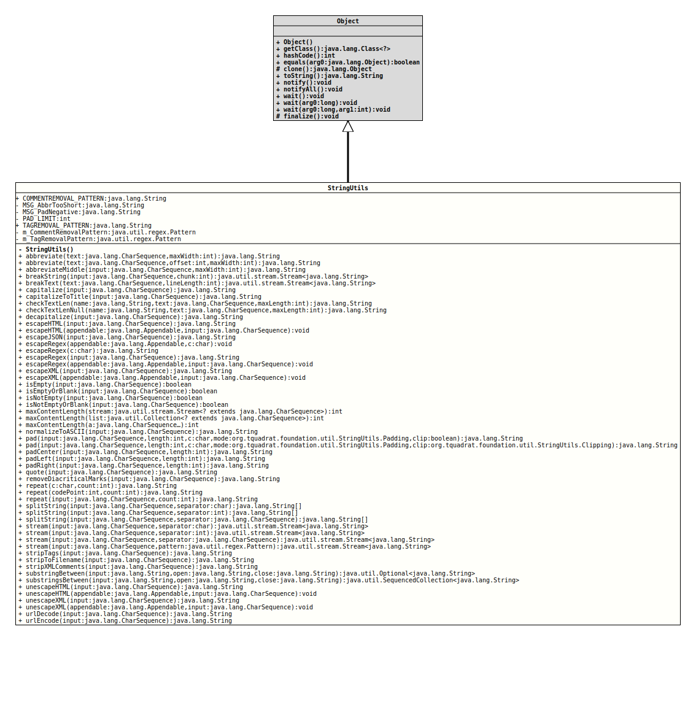

Parts of the code were adopted from the class
org.apache.commons.lang.StringUtils and modified to match the
requirements of this project. In particular, these are the methods
abbreviate()capitalize()escapeHTML()in both versionsisEmpty()isNotEmpty()repeat()unescapeHTML()in both versions
- Author:
- Thomas Thrien (thomas.thrien@tquadrat.org)
- Version:
- $Id: StringUtils.java 1084 2024-01-03 15:31:20Z tquadrat $
- Since:
- 0.0.3
- UML Diagram
-

UML Diagram for "org.tquadrat.foundation.util.StringUtils"
{kind=link}
-
Nested Class Summary
Nested ClassesModifier and TypeClassDescriptionstatic enumThe clipping mode that is used for the methodpad(CharSequence,int,char,Padding,Clipping)static enumThe padding mode that is used for the methodspad(CharSequence,int,char,Padding,boolean)andpad(CharSequence,int,char,Padding,Clipping) -
Field Summary
FieldsModifier and TypeFieldDescriptionstatic final StringThe regular expression for an HTML or XML comment: "<!--.+?-->".private static final PatternThe pattern that is used to identify an HTML or XML comment.private static final PatternThe pattern that is used to identify an HTML or XML tag.private static final StringThe message text indicating that the given value for the abbreviation target length is too short.private static final StringThe message indicating that the give size for padding is negative.private static final intThe maximum size to which the padding constant(s) can expand: 8192.static final StringThe regular expression for an HTML or XML tag: "(?:<!--.+?-->)|(?:<[^>]+?>)".
This pattern is used by thestripTags(CharSequence)method.
As HTML/XML comments may contain a "greater than" sign ('>' or '>'), it is necessary to treat comments separately.
Just as a reminder: several sources recommend using the following idiom for embedded JavaScript: -
Constructor Summary
Constructors -
Method Summary
Modifier and TypeMethodDescriptionstatic final Stringabbreviate(CharSequence text, int maxWidth) Abbreviates a String using ellipses (Unicode HORIZONTAL ELLIPSIS, 0x2026).static final Stringabbreviate(CharSequence text, int offset, int maxWidth) Abbreviates a String using ellipses (Unicode HORIZONTAL ELLIPSIS, 0x2026).static final StringabbreviateMiddle(CharSequence input, int maxWidth) Abbreviates a String using ellipses (Unicode HORIZONTAL ELLIPSIS, 0x2026) in the middle of the returned text.breakString(CharSequence input, int chunk) Breaks a long string into chunks of the given length.breakText(CharSequence text, int lineLength) Breaks a text into lines of the given length, but different frombreakString(CharSequence, int), it will honour whitespace.static final Stringcapitalize(CharSequence input) Capitalises a String, meaning changing the first letter to upper case as perCharacter.toUpperCase(char).static final StringcheckTextLen(String name, CharSequence text, int maxLength) Tests if the given text is notnull, not empty and not longer than the given maximum length.static final StringcheckTextLenNull(String name, CharSequence text, int maxLength) Tests if the given text is not longer than the given maximum length; different fromcheckTextLen(String, CharSequence, int), it may benullor empty.static final Stringdecapitalize(CharSequence input) Changes the first letter of the given String tolower case as perCharacter.toLowerCase(char).static final voidescapeHTML(Appendable appendable, CharSequence input) Escapes the characters in aStringusing HTML entities and writes them to anAppendable.static final StringescapeHTML(CharSequence input) Escapes the non-ASCII and special characters in aStringso that the result can be used in the context of HTML.static final StringescapeJSON(CharSequence input) Formats the givenStringfor the output into JSONText.static final StringescapeRegex(char c) Escapes the given character using Regex escapes.static final voidescapeRegex(Appendable appendable, char c) Escapes the given character using Regex escapes and writes them to aAppendable.static final voidescapeRegex(Appendable appendable, CharSequence input) Escapes the characters in aStringusing Regex escapes and writes them to aAppendable.static final StringescapeRegex(CharSequence input) Escapes the characters in aStringusing Regex escapes.static final voidescapeXML(Appendable appendable, CharSequence input) Escapes the characters in aStringusing XML entities and writes them to anAppendable.static final StringescapeXML(CharSequence input) Escapes the characters in aStringusing XML entities.static final booleanisEmpty(CharSequence input) Tests if the given String isnullor the empty String.static final booleanisEmptyOrBlank(CharSequence input) Tests if the given String isnull, the empty String, or just containing whitespace.static final booleanisNotEmpty(CharSequence input) Tests if the given String is notnulland not the empty String.static final booleanisNotEmptyOrBlank(CharSequence input) Tests if the given String is notnull, not the empty String, and that it contains other characters than just whitespace.static final intmaxContentLength(CharSequence... a) Determines the maximum length over all strings provided in the given array.static final intmaxContentLength(Collection<? extends CharSequence> list) Determines the maximum length over all strings provided in the givenCollection.static final intmaxContentLength(Stream<? extends CharSequence> stream) Determines the maximum length over all Strings provided in the givenStream.static final StringnormalizeToASCII(CharSequence input) Normalizes the given String to a pure ASCII String.static final Stringpad(CharSequence input, int length, char c, StringUtils.Padding mode, boolean clip) Brings the given string to the given length and uses the provided padding character to fill up the string.static final Stringpad(CharSequence input, int length, char c, StringUtils.Padding mode, StringUtils.Clipping clip) Brings the given string to the given length and uses the provided padding character to fill up the string.static final StringpadCenter(CharSequence input, int length) Fills up the given string to the given length by adding blanks on both sides; will abbreviate the string if it is longer than the given length.static final StringpadLeft(CharSequence input, int length) Fills up the given string to the given length by adding blanks on the left side; will abbreviate the string if it is longer than the given length.static final StringpadRight(CharSequence input, int length) Fills up the given string to the given length by adding blanks on the right side; will abbreviate the string if it is longer than the given length.static final Stringquote(CharSequence input) Surrounds the given String with double-quotes (", ").static final StringThis method replaces all diacritical characters in the input String by their base form.static final Stringrepeat(char c, int count) Repeats the given charrepeatto form a new String.static final Stringrepeat(int codePoint, int count) Repeats the given charrepeat, identified by its code point, to form a new String.static final Stringrepeat(CharSequence input, int count) Repeats the given Stringrepeattimes to form a new String.static final String[]splitString(CharSequence input, char separator) Splits a String by the given separator character and returns an array of all parts.static final String[]splitString(CharSequence input, int separator) Splits a String by the given separator character, identified by its Unicode code point, and returns an array of all parts.static final String[]splitString(CharSequence input, CharSequence separator) Splits a String by the given separator sequence and returns an array of all parts.stream(CharSequence input, char separator) Splits a String by the given separator character and returns an instance ofStreamproviding all parts.stream(CharSequence input, int separator) Splits a String by the given separator character, identified by its Unicode code point, and returns aStreamof all parts.stream(CharSequence input, CharSequence separator) Splits a String by the given separator sequence and returns an instance ofStreamcontaining all parts.stream(CharSequence input, Pattern pattern) Splits a String using the given regular expression and returns an instance ofStreamproviding all parts.static final StringstripTags(CharSequence input) Strips HTML or XML tags from the given String, without touching other entities (like&or ).static final StringstripToFilename(CharSequence input) Strips characters from the given input that are not allowed (or should be at least avoided) for a file or folder name on most or all operating systems.static final StringstripXMLComments(CharSequence input) Strips HTML or XML comments from the given String.static final voidunescapeHTML(Appendable appendable, CharSequence input) Unescapes a string containing entity escapes to a string containing the actual Unicode characters corresponding to the escapes and writes it to the givenAppendable.static final StringunescapeHTML(CharSequence input) Unescapes a string containing entity escapes to a string containing the actual Unicode characters corresponding to the escapes.static final voidunescapeXML(Appendable appendable, CharSequence input) Unescapes an XML String containing XML entity escapes to a String containing the actual Unicode characters corresponding to the escapes and writes it to the givenAppendable.static final StringunescapeXML(CharSequence input) Unescapes an XML string containing XML entity escapes to a string containing the actual Unicode characters corresponding to the escapes.static final StringurlDecode(CharSequence input) Returns the given URL encoded String in its decoded form, using the UTF-8 character encoding.
Internally, this method andurlEncode(CharSequence)make use of the methods fromURLDecoderandURLEncoder, respectively.static final StringurlEncode(CharSequence input) Returns the given String in its URL encoded form, using the UTF-8 character encoding.
-
Field Details
-
COMMENTREMOVAL_PATTERN
The regular expression for an HTML or XML comment: "<!--.+?-->".
This pattern is used by the
stripXMLComments(CharSequence)method.- Since:
- 0.0.5
- See Also:
-
MSG_AbbrTooShort
The message text indicating that the given value for the abbreviation target length is too short.- See Also:
-
MSG_PadNegative
The message indicating that the give size for padding is negative.- See Also:
-
PAD_LIMIT
The maximum size to which the padding constant(s) can expand: 8192.- See Also:
-
TAGREMOVAL_PATTERN
The regular expression for an HTML or XML tag: "(?:<!--.+?-->)|(?:<[^>]+?>)".
This pattern is used by thestripTags(CharSequence)method.
As HTML/XML comments may contain a "greater than" sign ('>' or '>'), it is necessary to treat comments separately.
Just as a reminder: several sources recommend using the following idiom for embedded JavaScript:<script> <!-- JavaScript code --> </script>- Since:
- 0.0.5
- See Also:
-
m_CommentRemovalPattern
The pattern that is used to identify an HTML or XML comment.- See Also:
-
m_TagRemovalPattern
The pattern that is used to identify an HTML or XML tag.- See Also:
-
-
Constructor Details
-
StringUtils
private StringUtils()No instance of this class is allowed.
-
-
Method Details
-
abbreviate
@API(status=STABLE, since="0.0.5") public static final String abbreviate(CharSequence text, int maxWidth) throws ValidationException Abbreviates a String using ellipses (Unicode HORIZONTAL ELLIPSIS, 0x2026). This will turn "Now is the time for all good men" into "Now is the time for…".
Specifically:- If
textis less thanmaxWidthcharacters long, return it unchanged. - Else abbreviate it to
(substring( text, 0, max - 1 ) + "…" ). - If
maxWidthis less than 4, throw anValidationException. - In no case it will return a String of length greater than
maxWidth.
StringUtils.abbreviate( null, * ) = null StringUtils.abbreviate( "", 4 ) = "" StringUtils.abbreviate( "abc", 4 ) = "abc" StringUtils.abbreviate( "abcd", 4 ) = "abcd;" StringUtils.abbreviate( "abcdefg", 4 ) = "abc…" StringUtils.abbreviate( "abcdefg", 7 ) = "abcdefg" StringUtils.abbreviate( "abcdefg", 8 ) = "abcdefg" StringUtils.abbreviate( "abcdefg", 3 ) = IllegalArgumentException- Parameters:
text- The String to abbreviate, can benull.maxWidth- The maximum length of result String, must be at least 4.- Returns:
- The abbreviated String, or
nullif the input was alreadynull. - Throws:
ValidationException- The value formaxWidthwas less than 4.- Since:
- 0.0.5
- If
-
abbreviate
@API(status=STABLE, since="0.0.5") public static final String abbreviate(CharSequence text, int offset, int maxWidth) throws ValidationException Abbreviates a String using ellipses (Unicode HORIZONTAL ELLIPSIS, 0x2026). This will turn "Now is the time for all good men" into "…is the time for…".
Works likeabbreviate(CharSequence, int), but allows to specify a "left edge" offset. Note that this left edge is not necessarily going to be the leftmost character in the result, or the first character following the ellipses, but it will appear somewhere in the result. An offset less than 0 will be treated as 0, a value greater thanmaxWidthwill be ignored.
In no case will it return a String of length greater thanmaxWidth.
Some samples:
StringUtils.abbreviate( null, *, * ) = null StringUtils.abbreviate( "", 0, 4 ) = "" StringUtils.abbreviate( "abcdefghijklmno", -1, 10 ) = "abcdefghi…" StringUtils.abbreviate( "abcdefghijklmno", 0, 10 ) = "abcdefghi…" StringUtils.abbreviate( "abcdefghijklmno", 1, 10 ) = "abcdefghi…" StringUtils.abbreviate( "abcdefghijklmno", 4, 10 ) = "…efghijkl…" StringUtils.abbreviate( "abcdefghijklmno", 5, 10 ) = "…fghijklm…" StringUtils.abbreviate( "abcdefghijklmno", 6, 10 ) = "…ghijklmno" StringUtils.abbreviate( "abcdefghijklmno", 8, 10 ) = "…ghijklmno" StringUtils.abbreviate( "abcdefghijklmno", 10, 10 ) = "…ghijklmno" StringUtils.abbreviate( "abcdefghijklmno", 12, 10 ) = "…ghijklmno" StringUtils.abbreviate( "abcdefghij", 0, 3 ) = IllegalArgumentException StringUtils.abbreviate( "abcdefghij", 5, 6 ) = IllegalArgumentException
- Parameters:
text- The String to process, can benull.offset- The left edge of the source String; this value will not be checked.maxWidth- The maximum length of result String, must be at least 4.- Returns:
- The abbreviated String, or
nullif the input was alreadynull. - Throws:
ValidationException- The value formaxWidthwas less than 4.- Since:
- 0.0.5
-
abbreviateMiddle
@API(status=STABLE, since="0.0.5") public static final String abbreviateMiddle(CharSequence input, int maxWidth) Abbreviates a String using ellipses (Unicode HORIZONTAL ELLIPSIS, 0x2026) in the middle of the returned text. This will turn "Now is the time for all good men" into "Now is … good men"
Works likeabbreviate(CharSequence, int).
In no case will it return a String of length greater thanmaxWidth.
Some samples:
StringUtils.abbreviateMiddle(null, *) = null StringUtils.abbreviateMiddle("", 5) = "" StringUtils.abbreviateMiddle("abcdefgh", 5) = "ab…gh" StringUtils.abbreviateMiddle("abcdefgh", 7) = "ab…gh" StringUtils.abbreviateMiddle("abcdefgh", 8) = "abcdefgh" StringUtils.abbreviateMiddle("abcdefgh", 4) = IllegalArgumentException- Parameters:
input- The String to check, may benull.maxWidth- The maximum length of result String, must be at least 5.- Returns:
- The abbreviated String, or
nullif the input was alreadynull. - Throws:
ValidationException- The value formaxWidthwas less than 5.- Since:
- 0.0.5
-
breakString
@API(status=STABLE, since="0.0.5") public static final Stream<String> breakString(CharSequence input, int chunk) Breaks a long string into chunks of the given length.
This method returns an instance of
Streamthat can be easily converted into an array or a collection.To array:
breakString( <string>, <chunk> ).toArray( String []::new )To collection (here: a
List):breakString( <string>, <chunk> ).collect( Collectors.toList() )- Parameters:
input- The string.chunk- The chunk size.- Returns:
- The chunks from the string; the last chunk could be shorter than the others.
- Since:
- 0.0.5
- See Also:
-
breakText
@API(status=STABLE, since="0.0.5") public static final Stream<String> breakText(CharSequence text, int lineLength) Breaks a text into lines of the given length, but different from
breakString(CharSequence, int), it will honour whitespace.This method returns an instance of
Streamthat can be easily converted into an array, a String, or a collection.To array:
breakText( <text>, <len> ).toArray( String []::new )To String:
breakText( <text>, <len> ).collect( Collectors.joining() )To collection (here: a
List):breakText( <text>, <len> ).collect( Collectors.toList() )- Parameters:
text- The text.lineLength- The length of a line.- Returns:
- The lines; if a word is longer than the given line length, a line containing only that word can be longer that the given line length.
- Since:
- 0.0.5
- See Also:
-
capitalize
Capitalises a String, meaning changing the first letter to upper case as per
Character.toUpperCase(char). No other letters are changed.A
nullinput String returnsnull.Samples:
StringUtils.capitalize( null ) == null; StringUtils.capitalize( "" ) == ""; StringUtils.capitalize( "cat" ) == "Cat"; StringUtils.capitalize( "cAt" ) == "CAt";Use this function to create a getter or setter name from the name of the attribute.
This method does not recognise the default locale. This means that "istanbul" will become "Istanbul" even for the locale
tr_TR(although "İstanbul" would be correct).- Parameters:
input- The String to capitalise, can benull.- Returns:
- The capitalised String, or
nullif the argument was alreadynull. - Since:
- 0.0.5
- See Also:
-
checkTextLen
@API(status=STABLE, since="0.0.5") public static final String checkTextLen(String name, CharSequence text, int maxLength) throws CharSequenceTooLongException, EmptyArgumentException, NullArgumentException Tests if the given text is notnull, not empty and not longer than the given maximum length. Use this to check whether a String that is provided as an argument to a method is longer than expected.- Parameters:
name- The name that should appear in the exception if one will be thrown. Usually this is the name of the argument to validate.text- The text to check.maxLength- The maximum length.- Returns:
- Always the contents of
textas a String; if the argument fails any of the tests, anIllegalArgumentExceptionor an exception derived from that will be thrown. - Throws:
CharSequenceTooLongException-textis longer thanmaxLength.EmptyArgumentException- Eithernameortextis the empty String.NullArgumentException- Eithernameortextisnull.- Since:
- 0.0.5
-
checkTextLenNull
@API(status=STABLE, since="0.0.5") public static final String checkTextLenNull(String name, CharSequence text, int maxLength) throws CharSequenceTooLongException Tests if the given text is not longer than the given maximum length; different fromcheckTextLen(String, CharSequence, int), it may benullor empty.- Parameters:
name- The name that should appear in the exception if one will be thrown.text- The text to check; may benull.maxLength- The maximum length.- Returns:
- Always the contents of
textas a String,nulliftextwasnull; if the argument fails any of the tests, anIllegalArgumentExceptionor an exception derived from that will be thrown. - Throws:
CharSequenceTooLongException-textis longer thanmaxLength.EmptyArgumentException-nameis empty.NullArgumentException-nameisnull.- Since:
- 0.0.5
-
decapitalize
Changes the first letter of the given String tolower case as perCharacter.toLowerCase(char). No other letters are changed. Anullinput String returnsnull.
Samples:StringUtils.decapitalize( null ) = null; StringUtils.decapitalize("") = ""; StringUtils.decapitalize("Cat") = "cat"; StringUtils.decapitalize("CAT") = "cAT";
Basically, this is the complementary method tocapitalize(CharSequence). Use this method to normalise the name of bean attributes.- Parameters:
input- The String to decapitalise, may benull.- Returns:
- The decapitalised String,
nullif the argument wasnull. - Since:
- 0.0.5
- See Also:
-
escapeHTML
Escapes the non-ASCII and special characters in a
Stringso that the result can be used in the context of HTML. Wherever possible, the method will return the respective HTML 5 entity; only when there is no matching entity, it will use the Unicode escape.So if you call the method with the argument "Süße", it will return "
Süße".If the input will be, for example, a Chinese text like this: "球体" (means "Ball"), you may get back something like this: "
球体", as there are no entities defined for (any) Chinese letters.The method supports all known HTML 5.0 entities, including funky accents. But it will not escape several commonly used characters like the full stop ('.'), the comma (','), the colon (':'), or the semicolon (';'), although they will be handled properly by
unescapeHTML(CharSequence).Note that the commonly used apostrophe escape character (') that was not a legal entity for HTML before HTML 5 is now supported.
- Parameters:
input- TheStringto escape, may benull.- Returns:
- A new escaped
String, ornullif the argument was alreadynull. - Since:
- 0.0.5
- See Also:
-
escapeHTML
@API(status=STABLE, since="0.0.5") public static final void escapeHTML(Appendable appendable, CharSequence input) throws IOException Escapes the characters in aStringusing HTML entities and writes them to anAppendable. For details, refer toescapeHTML(CharSequence).- Parameters:
appendable- The appendable object receiving the escaped string.input- TheStringto escape, may benull.- Throws:
NullArgumentException- The appendable isnull.IOException- whenAppendablepassed throws the exception from calls to theAppendable.append(char)method.- Since:
- 0.0.5
- See Also:
-
escapeJSON
Formats the givenStringfor the output into JSONText. This means that the input sequence will be surrounded by double quotes, and backslash sequences are put into all the right places.
< and > will be inserted as their Unicode values, allowing JSON text to be delivered in HTML.
In JSON text, a string cannot contain a control character or an unescaped quote or backslash, so these are translated to Unicode escapes also.- Parameters:
input- The string to escape to the JSON format; it may be empty, but notnull.- Returns:
- A string correctly formatted for insertion in a JSON text.
- Since:
- 0.0.5
-
escapeRegex
@API(status=STABLE, since="0.0.5") public static final void escapeRegex(Appendable appendable, char c) throws IOException Escapes the given character using Regex escapes and writes them to aAppendable.- Parameters:
appendable- The appendable receiving the escaped string.c- The character to escape.- Throws:
NullArgumentException- The appendable isnull.IOException- whenAppendablepassed throws the exception from calls to theAppendable.append(CharSequence)method.- Since:
- 0.0.5
-
escapeRegex
Escapes the given character using Regex escapes.- Parameters:
c- The character to escape.- Returns:
- A
Stringwith the escaped character. - Since:
- 0.0.5
-
escapeRegex
Escapes the characters in aStringusing Regex escapes.- Parameters:
input- TheStringto escape, may benull.- Returns:
- A new escaped
String, ornullif the argument was alreadynull. - Since:
- 0.0.5
-
escapeRegex
@API(status=STABLE, since="0.0.5") public static final void escapeRegex(Appendable appendable, CharSequence input) throws IOException Escapes the characters in aStringusing Regex escapes and writes them to aAppendable.- Parameters:
appendable- The appendable receiving the escaped string.input- TheStringto escape. Ifnullor the empty String, nothing will be put to the appendable.- Throws:
NullArgumentException- The appendable isnull.IOException- whenAppendablepassed throws the exception from calls to theAppendable.append(CharSequence)method.- Since:
- 0.0.5
-
escapeXML
Escapes the characters in a
Stringusing XML entities.For example:
"bread" & "butter"becomes:
"bread" & "butter".- Parameters:
input- TheStringto escape, may be null.- Returns:
- A new escaped
String, ornullif the argument was alreadynull. - See Also:
-
escapeXML
@API(status=STABLE, since="0.0.5") public static final void escapeXML(Appendable appendable, CharSequence input) throws IOException Escapes the characters in a
Stringusing XML entities and writes them to anAppendable.For example:
"bread" & "butter"becomes:
"bread" & "butter".- Parameters:
appendable- The appendable object receiving the escaped string.input- TheStringto escape, may benull.- Throws:
NullArgumentException- The appendable isnull.IOException- whenAppendablepassed throws the exception from calls to theAppendable.append(char)method.- Since:
- 0.0.5
- See Also:
-
isEmpty
Tests if the given String isnullor the empty String.- Parameters:
input- The String to test.- Returns:
trueif the given String reference isnullor the empty String.- Since:
- 0.0.5
-
isEmptyOrBlank
Tests if the given String isnull, the empty String, or just containing whitespace.- Parameters:
input- The String to test.- Returns:
trueif the given String reference is notnulland not the empty String.- Since:
- 0.0.5
- See Also:
-
isNotEmpty
Tests if the given String is notnulland not the empty String.- Parameters:
input- The String to test.- Returns:
trueif the given String reference is notnulland not the empty String.- Since:
- 0.0.5
-
isNotEmptyOrBlank
@API(status=STABLE, since="0.0.5") public static final boolean isNotEmptyOrBlank(CharSequence input) Tests if the given String is notnull, not the empty String, and that it contains other characters than just whitespace.- Parameters:
input- The String to test.- Returns:
trueif the given String reference is notnulland not the empty String, and it contains other characters than just whitespace.- Since:
- 0.0.5
- See Also:
-
maxContentLength
@API(status=STABLE, since="0.0.5") public static final int maxContentLength(Stream<? extends CharSequence> stream) Determines the maximum length over all Strings provided in the givenStream.- Parameters:
stream- The strings.- Returns:
- The length of the longest string in the list; -1 if all values
in the given
streamarenull, andInteger.MIN_VALUEif the givenstreamis empty. - Since:
- 0.0.5
-
maxContentLength
@API(status=STABLE, since="0.0.5") public static final int maxContentLength(Collection<? extends CharSequence> list) Determines the maximum length over all strings provided in the givenCollection.- Parameters:
list- The strings.- Returns:
- The length of the longest string in the list; -1 if all values
in the given
listarenull, andInteger.MIN_VALUEif the givenlistis empty. - Since:
- 0.0.5
-
maxContentLength
Determines the maximum length over all strings provided in the given array.- Parameters:
a- The strings.- Returns:
- The length of the longest string in the list; -1 if all values
in the array are
null, andInteger.MIN_VALUEif the given array has zero length. - Since:
- 0.0.5
-
normalizeToASCII
Normalizes the given String to a pure ASCII String. This replaces 'ß' by 'ss' and replaces all diacritical characters by their base form (that mean that 'ü' gets 'u' and so on). For the normalizing of a search criteria, this should be sufficient, although it may cause issues for non-latin scripts, as for these the input can be mapped to the empty String.
- Note:
-
- The scandinavian letters 'ø' and 'Ø' are not diacritical letters, nevertheless they will be replaced.
- Parameters:
input- The input string.- Returns:
- The normalised String, only containing ASCII characters; it could be empty. TODO Check the implementation and the results!! 2022-12-10
-
pad
@API(status=STABLE, since="0.0.5") public static final String pad(CharSequence input, int length, char c, StringUtils.Padding mode, boolean clip) Brings the given string to the given length and uses the provided padding character to fill up the string.- Parameters:
input- The string to format.length- The desired length; if 0 or less, the given string is returned, regardless ofclip.c- The pad character.mode- The pad mode.clip-trueif the input string should be cut in case it is longer thanlength,falseif it has to be returned unchanged .- Returns:
- The re-formatted string.
- Since:
- 0.0.5
-
pad
@API(status=STABLE, since="0.0.5") public static final String pad(CharSequence input, int length, char c, StringUtils.Padding mode, StringUtils.Clipping clip) Brings the given string to the given length and uses the provided padding character to fill up the string.- Parameters:
input- The string to format.length- The desired length; if 0 or less, the given string is returned, regardless ofclip.c- The pad character.mode- The pad mode.clip- The clipping mode.- Returns:
- The re-formatted string.
- Since:
- 0.0.5
-
padCenter
@API(status=STABLE, since="0.0.5") public static final String padCenter(CharSequence input, int length) Fills up the given string to the given length by adding blanks on both sides; will abbreviate the string if it is longer than the given length. The minimum length is 5.
This is a shortcut to a call to
pad( input, length, ' ', PADDING_CENTER, CLIPPING_ABBREVIATE_MIDDLE ).- Parameters:
input- The string to format.length- The desired length; minimum value is 5.- Returns:
- The re-formatted string.
- Since:
- 0.0.5
- See Also:
-
padLeft
@API(status=STABLE, since="0.0.5") public static final String padLeft(CharSequence input, int length) Fills up the given string to the given length by adding blanks on the left side; will abbreviate the string if it is longer than the given length. The minimum length is 4.
This is a shortcut to a call to
pad( input, length, ' ', PADDING_LEFT, CLIPPING_ABBREVIATE ).- Parameters:
input- The string to format.length- The desired length; the minimum value is 4.- Returns:
- The re-formatted string.
- Since:
- 0.0.5
- See Also:
-
padRight
@API(status=STABLE, since="0.0.5") public static final String padRight(CharSequence input, int length) Fills up the given string to the given length by adding blanks on the right side; will abbreviate the string if it is longer than the given length. The minimum length is 4.
This is a shortcut to a call to
pad( input, length, ' ', PADDING_RIGHT, CLIPPING_ABBREVIATE ).- Parameters:
input- The string to format.length- The desired length; the minimum value is 4.- Returns:
- The re-formatted string.
- Since:
- 0.0.5
- See Also:
-
quote
Surrounds the given String with double-quotes (", ").
When the double-quote is needed in a String constant, it has to be escaped with a backslash:
"\"…\""Sometimes, this is just ugly, and there this method comes into play.
- Parameters:
input- The String to surround; can benull.- Returns:
- The quoted String; will be
nullif the argument wasnullalready.
-
removeDiacriticalMarks
This method replaces all diacritical characters in the input String by their base form. That means that 'ü' gets 'u', `È' gets 'E' and so on).
This differs from
normalizeToASCII(CharSequence)as this method still allows non-ASCII characters in the output.- Note:
-
- The scandinavian letters 'ø' and 'Ø' are not diacritical letters, meaning they will not be replaced.
- Parameters:
input- The input string.- Returns:
- The normalised String, not containing any diacritical characters. TODO Check the implementation and the results!! 2022-12-10
-
repeat
Repeats the given charrepeatto form a new String. The table below shows the various result for some argument combinations.
StringUtils.repeat( 'a', 0 ) ⇒ ""
StringUtils.repeat( 'a', 3 ) ⇒ "aaa"
StringUtils.repeat( 'a', -2 ) ⇒ ""
- Parameters:
c- The character to repeat.count- The number of times to repeatc; a negative value will be treated as zero.- Returns:
- A new String consisting of the given character repeated
counttimes, or the empty String ifcountwas 0 or negative. - Since:
- 0.0.5
- See Also:
-
repeat
Repeats the given charrepeat, identified by its code point, to form a new String. The table below shows the various result for some argument combinations.
StringUtils.repeat( 'a', 0 ) ⇒ ""
StringUtils.repeat( 'a', 3 ) ⇒ "aaa"
StringUtils.repeat( 'a', -2 ) ⇒ ""
- Parameters:
codePoint- The character to repeat.count- The number of times to repeatc; a negative value will be treated as zero.- Returns:
- A new String consisting of the given character repeated
counttimes, or the empty String ifcountwas 0 or negative, ornullif the code point is invalid. - Since:
- 0.0.5
- See Also:
-
repeat
Repeats the given Stringrepeattimes to form a new String. The table below shows the various result for some argument combinations.
StringUtils.repeat( null, 2 ) ⇒ null
StringUtils.repeat( "", 0 ) ⇒ ""
StringUtils.repeat( "", 2 ) ⇒ ""
StringUtils.repeat( "a", 3 ) ⇒ "aaa"
StringUtils.repeat( "ab", 2 ) ⇒ "abab"
StringUtils.repeat( "a", -2 ) ⇒ ""
- Parameters:
input- The String to repeat, may benull.count- The number of times to repeatstr; a negative value will be treated as zero.- Returns:
- A new String consisting of the original String repeated,
counttimes, the empty String ifcountwas 0 or negative, ornullif the input String wasnull, too. - Since:
- 0.0.5
- See Also:
-
splitString
@API(status=STABLE, since="0.0.5") public static final String[] splitString(CharSequence input, char separator) Splits a String by the given separator character and returns an array of all parts. In case a separator character is immediately followed by another separator character, an empty String will be placed to the array.
Beginning and end of the String are treated as separators, so if the first character of the String is a separator, the returned array will start with an empty String, as it will end with an empty String if the last character is a separator.
In case the String is empty, the return value will be an array containing just the empty String. It will not be empty.
- Parameters:
input- The String to split.separator- The separator character.- Returns:
- The parts of the String.
- Since:
- 0.0.5
-
splitString
@API(status=STABLE, since="0.0.5") public static final String[] splitString(CharSequence input, int separator) Splits a String by the given separator character, identified by its Unicode code point, and returns an array of all parts. In case a separator character is immediately followed by another separator character, an empty String will be placed to the array.
Beginning and end of the String are treated as separators, so if the first character of the String is a separator, the returned array will start with an empty String, as it will end with an empty String if the last character is a separator.
In case the String is empty, the return value will be an array containing just the empty String. It will not be empty.
- Parameters:
input- The String to split.separator- The code point for the separator character.- Returns:
- The parts of the String.
- Since:
- 0.0.5
-
splitString
@API(status=STABLE, since="0.0.5") public static final String[] splitString(CharSequence input, CharSequence separator) Splits a String by the given separator sequence and returns an array of all parts. In case a separator sequence is immediately followed by another separator sequence, an empty String will be placed to the array.
Beginning and end of the String are treated as separators, so if the first part of the String equals the separator sequence, the returned array will start with an empty String, as it will end with an empty String if the last part would equal the separator sequence.
In case the String is empty, the return value will be an array containing just the empty String. It will not be empty.
- Parameters:
input- The String to split.separator- The separator sequence.- Returns:
- The parts of the String.
- Since:
- 0.0.5
-
stream
@API(status=STABLE, since="0.0.7") public static final Stream<String> stream(CharSequence input, char separator) Splits a String by the given separator character and returns an instance of
Streamproviding all parts. In case a separator character is immediately followed by another separator character, an empty String will be put to theStream.Beginning and end of the String are treated as separators, so if the first character of the String is a separator, the returned
Streamwill start with an empty String, as it will end with an empty String if the last character is a separator.In case the String is empty, the return value will be a
Streamcontaining just the empty String. It will not be empty.- Parameters:
input- The String to split.separator- The separator character.- Returns:
- A
Streaminstance with the parts of the String. - Since:
- 0.0.7
-
stream
@API(status=STABLE, since="0.0.7") public static final Stream<String> stream(CharSequence input, int separator) Splits a String by the given separator character, identified by its Unicode code point, and returns a
Streamof all parts. In case a separator character is immediately followed by another separator char, an empty String will be put to theStream.Beginning and end of the String are treated as separators, so if the first character of the String is a separator, the returned
Streamwill start with an empty String, as it will end with an empty String if the last character is a separator.In case the String is empty, the return value will be a
Streamcontaining just the empty String. It will not be empty.- Parameters:
input- The String to split.separator- The code point for the separator character.- Returns:
- A
Streaminstance with the parts of the String. - Since:
- 0.0.7
-
stream
@API(status=STABLE, since="0.0.7") public static final Stream<String> stream(CharSequence input, CharSequence separator) Splits a String by the given separator sequence and returns an instance of
Streamcontaining all parts. In case a separator sequence is immediately followed by another separator sequence, an empty String will be put to theStream.Beginning and end of the String are treated as separators, so if the first part of the String equals the separator sequence, the returned
Streamwill start with an empty string, as it will end with an empty String if the last part would equal the separator sequence.In case the String is empty, the return value will be a
Streamcontaining just the empty String. It will not be empty.- Parameters:
input- The String to split.separator- The separator sequence.- Returns:
- The parts of the String.
- Since:
- 0.0.7
-
stream
@API(status=STABLE, since="0.0.7") public static final Stream<String> stream(CharSequence input, Pattern pattern) Splits a String using the given regular expression and returns an instance of
Streamproviding all parts. In case a separator sequence is immediately followed by another separator sequence, an empty String will be put to theStream.Beginning and end of the String are treated as separators, so if the first part of the String equals the separator sequence, the returned
Streamwill start with an empty string, as it will end with an empty String if the last part would equal the separator sequence.In case the String is empty, the return value will be a
Streamcontaining just the empty String. It will not be empty.- Note:
-
- This method behaves different from as it will return trailing empty Strings.
- Parameters:
input- The String to split.pattern- The separator sequence.- Returns:
- The parts of the String.
- Since:
- 0.0.7
- See Also:
-
stripTags
Strips HTML or XML tags from the given String, without touching other entities (like&or ). The result would be the effective text, stripped from all other whitespace (except single blanks).
This means that the result for
would be just "stripTags( "<html> <head> … </head> <body> <a href='…'> Simple <br> <br> Text </a> </body> </html>" )Simple Text".
Comments will be stripped as well, and<pre>tags are not interpreted, with the consequence that any formatting with whitespace gets lost.CDATAelements are stripped, too.- Parameters:
input- The HTML/XML string.- Returns:
- The string without the tags.
- Since:
- 0.0.7
-
stripToFilename
@API(status=STABLE, since="0.0.5") public static final String stripToFilename(CharSequence input) throws ValidationException Strips characters from the given input that are not allowed (or should be at least avoided) for a file or folder name on most or all operating systems.
The following characters will be stripped:
- : (colon)
- On Windows systems it is used to separate
the drive letter from the path and file name; on Unix-like operating
systems (including MacOS) it would be valid, but it can cause issues on
the
PATHandCLASSPATHvariables on these operating systems. - \ (backslash)
- On Windows systems it is used as the path separator, while on Unix-like operating systems it is problematic in other ways. For example, it is used to escape blanks in not-quoted file or folder names.
- / (slash or forward slash)
- The path separator on Unix-like operating systems, but Java will use it that way on Windows systems, too.
- ; (semicolon)
- It can cause issues on the
PATHandCLASSPATHvariables on Windows. - * (asterisk)
- The asterisk is often used as wild card character in shell programs to find groups of files; using it in a file name can cause funny effects.
- ? (question mark)
- The question mark is used on Windows as a wild card for a single character; similar to the asterisk, it can cause funny effects when used in a file name.
- " (double quotes)
- ' (single quotes)
- Both have some potential to confuse the various shell programs of all operating systems.
- @ ('at'-sign)
- Although it is allowed for file and folder names, it causes issues when used in the URL for that respective file.
- | (pipe symbol)
- Similar to the '*' (asterisk), the pipe-symbol has – as the name already indicates - a meaning on most shells that would make it difficult to manage files that contains this character in their names.
- < (less than)
- > (greater than)
- Like the pipe, these two have a meaning on most shells that would make it difficult to manage files that contains one of these characters in their names.
- Whitespace
- Only blanks will remain, any other whitespace characters are stripped.
Finally, the method will strip all leading and trailing blanks; although blanks are usually allowed, they are confusing when not surrounded by some visible characters.
Especially regarding the characters that are critical for shells ('*', '?', '"', ''', '|', '<', and '>') this method is over-cautious, as most shells could handle them after proper escaping the offending characters or quoting the file name.
This method furthermore assumes that any other Unicode character is valid for a file or folder name; unfortunately, there are filesystems where this is not true.
- Note:
-
- This method will not take care about the length of the returned String; this means the result to a call to this method may still be invalid as a file or folder name because it is too long.
- Parameters:
input- The input String, denoting a file or folder name - not a full path.- Returns:
- The String without the characters that are invalid for a file
name. This value will never be
nullor empty. - Throws:
NullArgumentException- The input isnull.EmptyArgumentException- The input is the empty String.ValidationException- After stripping the invalid characters the return value would be empty.- Since:
- 0.0.5
-
stripXMLComments
Strips HTML or XML comments from the given String.- Parameters:
input- The HTML/XML string.- Returns:
- The string without the comments.
- Since:
- 0.0.5
-
unescapeHTML
Unescapes a string containing entity escapes to a string containing the actual Unicode characters corresponding to the escapes. Supports HTML 5.0 entities.
For example, the string "<Français>" will become "<Français>".
If an entity is unrecognised, it is left alone, and inserted verbatim into the result string. e.g. ">&zzzz;x" will become ">&zzzz;x".- Parameters:
input- TheStringto unescape, may benull.- Returns:
- A new unescaped
String,nullif the given string was alreadynull. - Since:
- 0.0.5
- See Also:
-
unescapeHTML
@API(status=STABLE, since="0.0.5") public static final void unescapeHTML(Appendable appendable, CharSequence input) throws IOException Unescapes a string containing entity escapes to a string containing the actual Unicode characters corresponding to the escapes and writes it to the givenAppendable. Supports HTML 4.0 entities.
For example, the string "<Français>" will become "<Français>".
If an entity is unrecognised, it is left alone, and inserted verbatim into the result string. e.g. ">&zzzz;x" will become ">&zzzz;x".- Parameters:
appendable- The appendable receiving the unescaped string.input- TheStringto unescape, may benull.- Throws:
NullArgumentException- The appendable isnull.IOException- An IOException occurred.- Since:
- 0.0.5
- See Also:
-
unescapeXML
Unescapes an XML string containing XML entity escapes to a string containing the actual Unicode characters corresponding to the escapes.
If an entity is unrecognised, it is left alone, and inserted verbatim into the result string. e.g. ">&zzzz;x" will become ">&zzzz;x".
- Parameters:
input- TheStringto unescape, may benull.- Returns:
- A new unescaped
String,nullif the given string was alreadynull. - Since:
- 0.0.5
- See Also:
-
unescapeXML
@API(status=STABLE, since="0.0.5") public static final void unescapeXML(Appendable appendable, CharSequence input) throws IOException Unescapes an XML String containing XML entity escapes to a String containing the actual Unicode characters corresponding to the escapes and writes it to the given
Appendable.If an entity is unrecognised, it is left alone, and inserted verbatim into the result string. e.g. ">&zzzz;x" will become ">&zzzz;x".
- Parameters:
appendable- The appendable receiving the unescaped string.input- TheStringto unescape, may benull.- Throws:
NullArgumentException- The writer isnull.IOException- An IOException occurred.- Since:
- 0.0.5
- See Also:
-
urlDecode
Returns the given URL encoded String in its decoded form, using the UTF-8 character encoding.
Internally, this method andurlEncode(CharSequence)make use of the methods fromURLDecoderandURLEncoder, respectively. The methods here were introduced to simplify the handling, as first only the UTF-8 encoding should be used - making the second argument for the methodsdecode()/encode()obsolete - and second, they could throw anUnsupportedEncodingException- although this should never occur when UTF-8 encoding is used.- Parameters:
input- The input String.- Returns:
- The decoded result.
- Since:
- 0.0.5
- See Also:
-
urlEncode
Returns the given String in its URL encoded form, using the UTF-8 character encoding.- Parameters:
input- The input String.- Returns:
- The URL encoded result.
- Since:
- 0.0.5
- See Also:
-